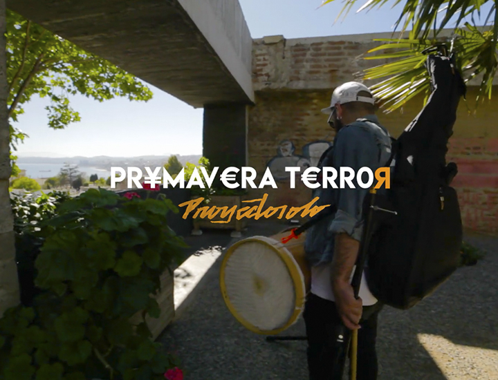

Comunicador Audiovisual: Hago vídeos, grabo, edito, saco fotografías, opero drones y patino, me gusta CREAR
He realizado más de un centenar de vídeos, entre los cuales he tenido la función de operar distintos modelos de cámaras en general DSLR(Canon, Sony, Panasonic), cámaras utilizadas para transmisión en streaming y digitales como la BlackMagic Cinema 4K. Aunque debo admitir que tengo un interés especial en los movimientos de cámara complejos y los planos secuencias, por lo que he elegido al momento de realizar SteadyCam y poseo un Gimbal Eléctrico (Zhiyun Crane), cada realización es un desafío nuevo y mientras más físico sea, mejor para mí.
Área de mi especialidad, el montaje es, sino la más, una de las etapas determinantes al momento de contar una idea, manejo los distintos estilos de montaje y cuento con una amplía gama de técnicas de Post-Producción para hermosear(Corrección de color) y afinar(transición, vfx y gráficas) la obra final. Utilizo la Suite Adobe(Premiere Pro, After Effects, Illustrator, Photoshop) aunque también sé utilizar Final Cut Pro, actualmente trabajo en Windows pero cómo dicen por ahí, uno nunca terminar de aprender, trato de mantenerme a la vanguardia con los softwares que van apareciendo en la industria.
https://www.youtube.com/watch?v=eVsBRsigvqA
El año 2014 operé por primera vez un Drone, el Phantom Dji 2, compañero de batallas durante 3 años. Aparte he realizado rodajes y capturas aéreas utilizando el Dji Phantom 3 y el Phantom 4, tengo aproximadamente unos 100 vuelos de experiencia y he operado drones en distintas condiciones climáticas.
Soy Comunicador Audiovisual con vasta experiencia en la creación de videos de manera integra, siendo capaz de dirigir, operar cámara, operar Drones, asistir en las distintas aristas de una realización audiovisual ya sea dirección de arte, dirección de fotografía aparte de ser montajista y post-productor. He tenido la responsabilidad de desempeñarme en el área de registro y producción audiovisual en distintos tipos de escenarios, desde la realización por completo de videos musicales a registros en festivales de artes, cámara en publicidad, cámara en festivales de música en vivo , cámara en talleres y charlas, edición de videos corporativos, realización de corto-documentales, realización de registros fotográficos y también como monitor(tallerista) en talleres de formación audiovisual básica para niños de zonas extremas (Punta Arenas, Puerto Natales, Porvenir.
REEL 2018 from Rebel films on Vimeo.
Acá puedes ver algunos de mis trabajos